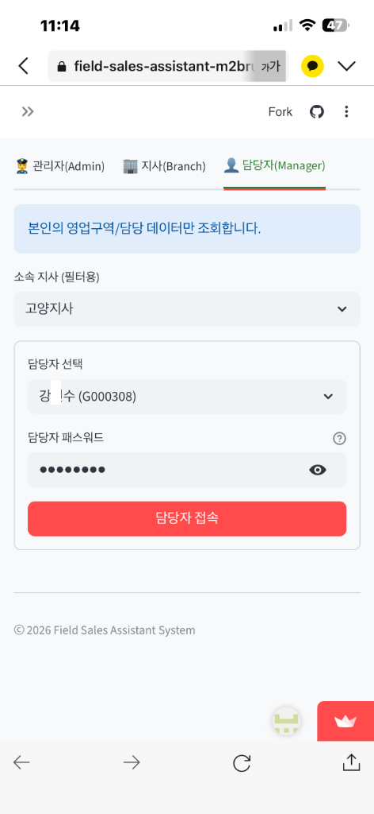
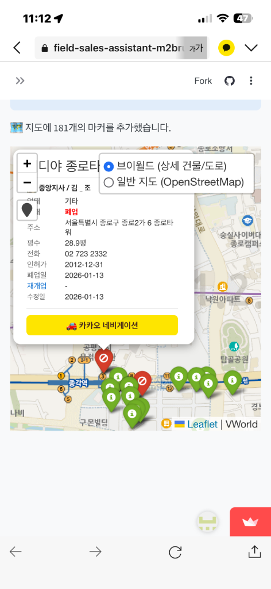
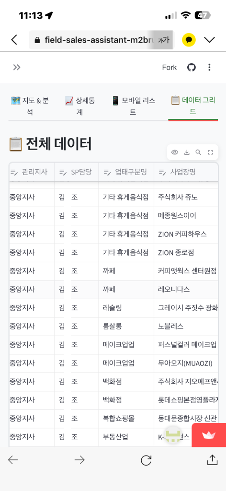
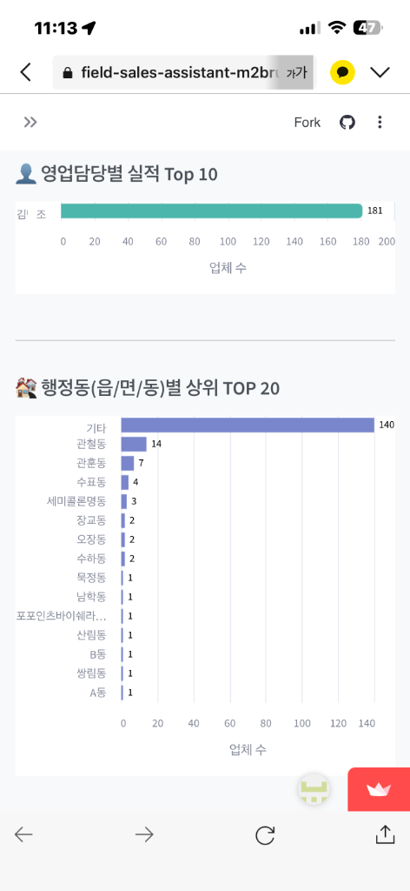
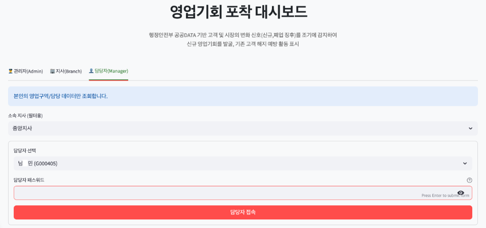

01
전문적인 UX/UI 설계
사용자의 첫인상을 결정짓는 메인 화면입니다. 깔끔하고 전문적인 디자인 인터페이스를 통해 현장 영업 사원들이 복잡한 데이터에 쉽게 접근할 수 있도록 설계되었습니다.
- 직관적인 역할 기반 로그인
- 모바일 최적화 반응형 레이아웃


02
지도 기반 시각화 및 동선 최적화
전국 190여 업종의 신규/폐업 공공데이터를 지도 위에 즉시 시각화합니다. ‘방문 동선 최적화’ 기능을 통해 불필요한 이동 시간을 획기적으로 단축하며 영업의 기동성을 극대화합니다.
- 실시간 영업 기회 탐지 마커
- 카카오 내비 연동 최적 경로 안내
03
관리자 그리드 대시보드
현장의 활동 데이터를 한눈에 파악할 수 있는 관리용 그리드입니다. 데이터 현행화 상태와 영업 사원의 성과를 실시간으로 모니터링하여 데이터 중심의 즉각적인 의사결정을 돕습니다.
- 9.5만 건 이상의 데이터 마스터
- 스마트 필터링 및 리포트 내보내기


04
데이터 분석 및 전략 통계
단순한 정보 제공을 넘어 고도화된 통계 분석을 제공합니다. 업종별 분포, 폐업 추이, 방문 성공률 등을 시각화하여 영업 전략을 정교하게 다듬을 수 있는 근거를 마련합니다.
- AI 스코어링 기반 우선순위 산출
- 지사별/담당자별 맞춤형 리포트
05
거대 생태계: 기술 허브
문서화, 가치 분석, 아키텍처 다이어그램 등을 한곳에 모은 통합 랜딩 페이지입니다. 프로젝트의 규모감과 기술적 안정성을 동시에 증명하는 프로젝트의 사령탑입니다.
